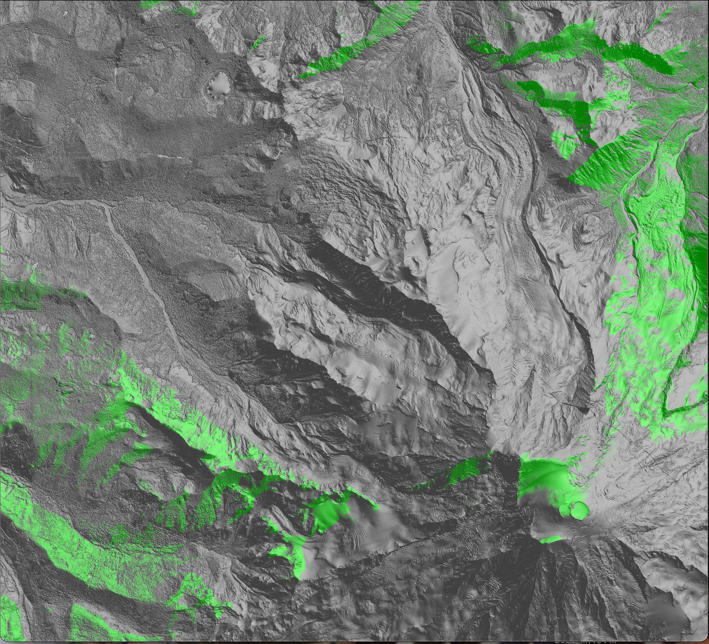
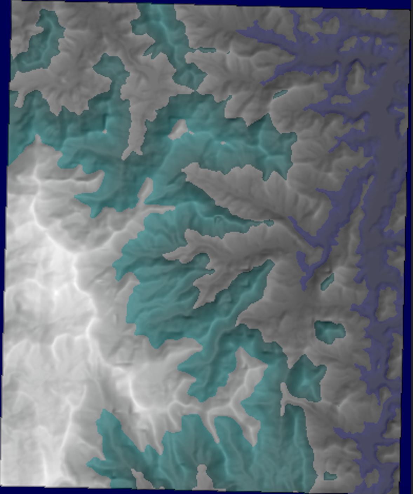
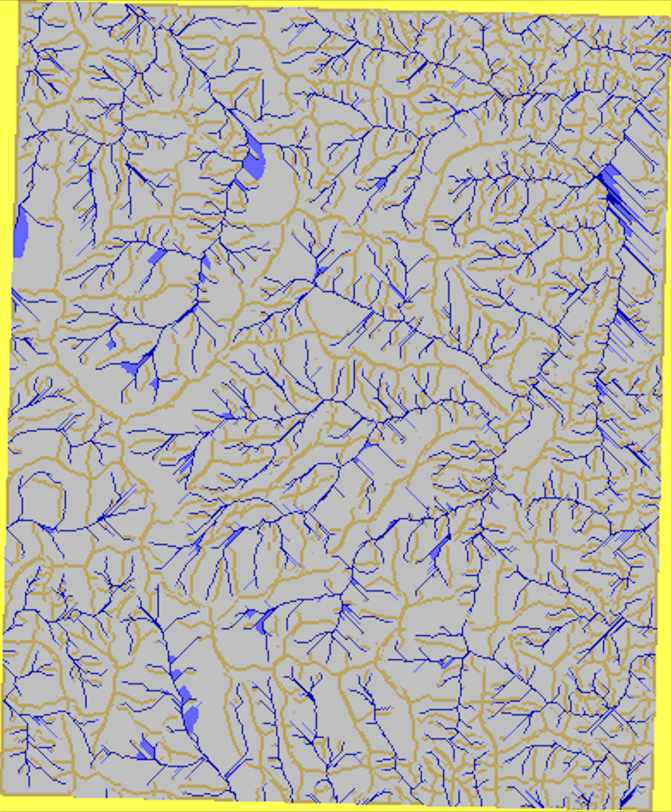
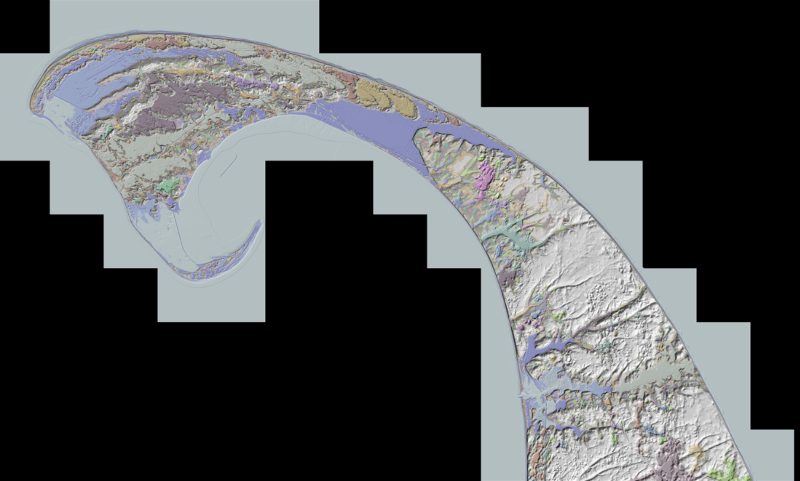

GIS-Mapping Projects
Fall 2023 I took a course on advanced GIS Algorithmns. This project is a series of programs that effeciently compute and visualize viewshed, Flow, and sea-level rise.
Viewshed
The program computes and visualizes the points that are visible from a given input point on an .asc grid. The implementation I used is an exact implementation that takes cubic time, I plan on implementing radial sweep and horizon Algorithmns variations of this program to improve the run time. I plan on using the exact implementation as a benchamrk for accuracy statistics. Below is a visualization of viewshes from a point atop Mt.Rainer. The data set that was used contains 12gb of data with over 65 million points, my algortithim took about 2 hours to run. I hope to improve this by implementing more effecicent algorithmns in the future.

Viewshed Repo LinkFlow
The program computes and visualizes the flow network derived from flow direction and flow accumulation based on an .asc file of points. Below are 3 of the maps outputted by the program.
Elevation Gradient overlayed with Hillshade to visualize terrain
Flow Accumulation (yellow is 0 flow accumulation, while gray, blue, and dark blue represent increasing amounts of flow accumulation)
Flow Accumulation overlayed with Hillshade

Sea Level Rise
Uses a queue of boundary sea points to incrementally flood the land. Shown below is a map of North Truro and Provincetown MA. This code helps visualize flooding by utilizing an array of colors and hillshading. results are consistent with other tools and softwarre used by goverment agencies. To better depict the results the flooding results are overlayed ontop of the hillshade.
20ft" class="project-image">